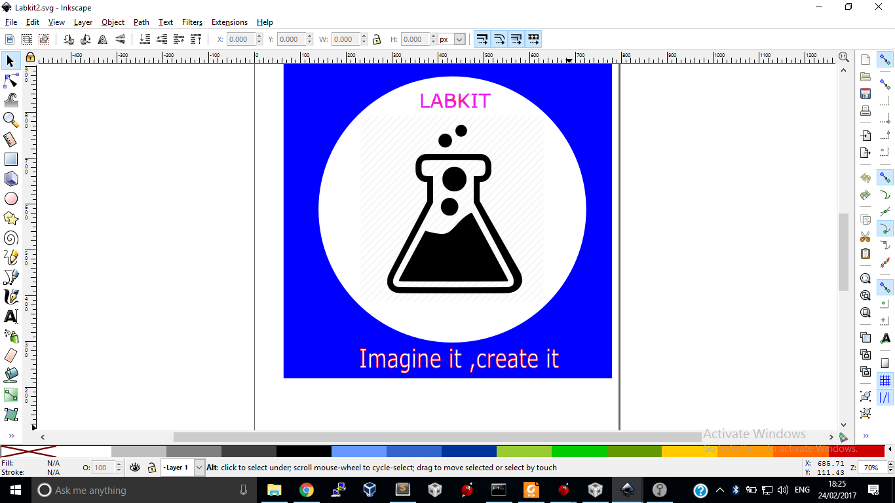

WEEK 2
COMPUTER AIDED DESIGN
During this week I will be taking you through how to use certain free and easy to use software to design and build cool and amazing projects
-
Inskcape Software
Design using Inkscape
After downloading and installing inskcape ,Start a new project and design your project or object as shown below
Pictures
You can set it up with:
Result:
- Inventor
Inskcape is a nice and freely available software which can be used to design and draw nice shapes /images which can later be cut or engraved using alaser cutter or vinyll cutter In this week we will design and cut a nice product using a laser cutter. I will also show you how to use a vinyll cutter to cut wonderful logos and stickers for our laptops
Navigate your browser to this Url and download and install inskcape
Inventor Setup
Say something cool about AutoDesk Inventor
Result: